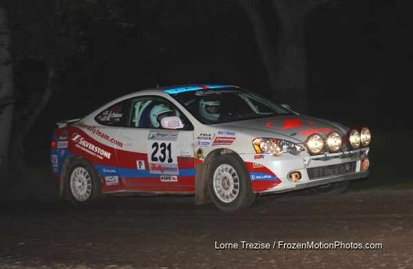

With almost thirty two-wheel-drive rally cars entered, a classic battle shapes up for the $5,000 event prize fund and valuable points towards the Jake Himes Cup.

Portland, OR (May 11, 2010) – The first round of the 2010 MaxAttack! Series, presented by the Danza del Sol winery, has drawn the strong entry that the Rallysports Group of America envisioned when they created the series in 2007. Entries from near and far are gathering at Portland International Raceway on Friday night and Dufur, Oregon on Saturday and Sunday to contest 115 rugged, high-speed stage miles over three days.
The array of two-wheel-drive vehicles entered in the rally is astounding. There are 13 different marques represented in the 29 current entries. There are forty years separating the construction of the 1969 Saab 96 of Garth Ankeny/Russ Kraushaar and the 2009 Scion XD of Christopher Duplessis/Ron Zaras. And the Saab isn’t even the oldest car entered in the event! That honor goes to Glenn Wallace and R. Dale Kraushaar in a 1967 Ford Cortina GT. There are front-drive cars and rear-drive cars. There are turbocharged cars and normally-aspirated cars, and even rotary engine cars. What will be the formula for victory on the roads of Oregon, which are known for their variety in character? And, of course, in Oregon the weather is always a great unknown.
Oregon Trail is the fourth round of the 2010 Rally America National Series, so one might expect that the front-runners for the MaxAttack! could be the national series regulars. For this event Christopher Duplessis has traded his trusty VW Golf for a brand-new Scion XD. In the Golf Duplessis would be the clear favorite, but as with all new competition cars the Scion will not have been rally-tested. It is exciting to have a new manufacturer involved with the series. Last year’s two-wheel-drive Rally America national champion, Dillon Van Way, is once again teamed with “Pirate” Ben Slocum in a Ford Focus. The team had a significant off at the previous round in Washington; it will be interesting to see if their usual pace is affected. Nick Allen and Erik Lee will be fast in another Focus, as will Burak Tuglu and Carrie Wilburn. Colorado’s John Conley and Keith Rudolph will be in the reckoning as well in their Dodge Neon SRT-4.
But there are some local, west-coast hotshoes that are going to give the national competitors a run for the MaxAttack! money. Heading that list is the Demon Rally Team, Tom and Don Burress, who were fast in a VW Golf before they installed a turbocharger! It will be interesting to see how the brothers fare with the added power. Cody Crane and Billy Irvin are insanely quick in a high-revving Honda CRX but, like Van Way and Slocum, they are coming off a rollover at their most recent event. However, that is not likely to slow Cody down a bit. A recent addition to the Northwest rally scene is the MazdaSpeed3 of Dave Henderson and Terry McDowell, who had a great run in the car’s debut at Olympus. Also expected to fare well is the VW Jetta of Chrissie Beavis and Lucy Block. Chrissie is normally seen in the co-driver seat of some of the top drivers in North America, but few people outside the southwest are aware of her considerable prowess behind the steering wheel. A team that could very well place in the MaxAttack! money is the VW Golf of Gaylord Van Brocklin and Steve Secviar; while relatively new to the sport, the team has shown good speed in the California Rally Series.
The Rallysports Group of America is also pleased to announce that veteran co-driver Alex Gelsomino, who partners Ken Block in the Monster World Rally Team Ford Focus and the Monster Ford Fiesta in the Rally America National Series, has agreed to furnish the top-placed rookie co-driver in the MaxAttack! series with a very generous prize. The MaxAttack! series top-finishing co-driver with five or fewer rally weekends through Lake Superior will receive a $500 gift certificate redeemable at nickygrist.com, the online store operated by co-driving icon Nicky Grist. Thank you, Alex, for your continued generosity and support of the series.
The three events that will constitute the 2010 MaxAttack! Rally Series Presented by Danza del Sol are:
• Oregon Trail, May 14-16, Portland, The Dalles, and Dufur, OR, http://www.oregontrailrally.com
• New England Forest Rally, July 16-17, Bethel, ME, http://www.newenglandforestrally.com
• Lake Superior Performance Rally, October 16-17, Houghton, MI, http://www.lsprorally.com
Oregon Trail and the New England Forest Rally will be the qualifying events for the Jake Himes Cup, and the Lake Superior Performance Rally will be the central Shootout event.
The MaxAttack! Rally Series Presented by Danza del Sol consists of three events across the country, and each event will feature a $5,000 prize fund to be distributed among the top two-wheel-drive teams, as well as a season championship. For more information about the MaxAttack! Series and the Rallysports Group of America, please visit http://www.max-attack.com.
About Danza del Sol Winery
Nestled in the rolling hills of the beautiful Temecula Wine Valley, Danza Del Sol Winery is a thirty-five acre estate winery located in Southern California’s Wine Country. While Danza Del Sol’s tasting room officially opened in February 2010, the winery itself already has a remarkable history. The estate was previously owned by Dr. William Filsinger and his late wife Katharine, who provided the Temecula Wine Valley with exceptional wines for nearly 30 years. Danza Del Sol is dedicated to producing a unique range of premium varietal and proprietary blended wines that are sure to exceed your expectations, at affordable prices. For more information, please visit http://danzadelsol.com/.
About Rallysports Group of America
Rallysports Group of America, Inc. (RSGA) was formed as an organization in 2006 to advance the sport of performance stage rally in the United States. By providing education on performance driving, car preparation and safety, and by fostering the growth of meaningful competition, RSGA seeks to provide a sustainable and competitive arena for the advancement of North American performance rally that promotes increased value for rally competitors, organizers, and sponsors alike. For more information, please visit http://www.max-attack.com.
About Rally America, Inc.
Based in Golden Valley, Minn., Rally America sanctions the premier rally racing series in the United States, the Rally America National Championship Series. In 2010, Rally America will conduct six National Championship events at venues across the country, from Olympia, Wash., to Bethel, Maine. Rally America competitors reach speeds well over 100 mph in modified street cars on natural-terrain courses of gravel, dirt or snow. In the Fall of 2010, Rally America will also introduce European-style wheel-to-wheel rally cross to North America. For more information regarding Rally America, Inc., the 2010 Rally America National Rally Championship or the new European-style rally cross events taking place at the New Jersey Motor Sports Park in the fall of 2010, please visit www.rally-america.com.